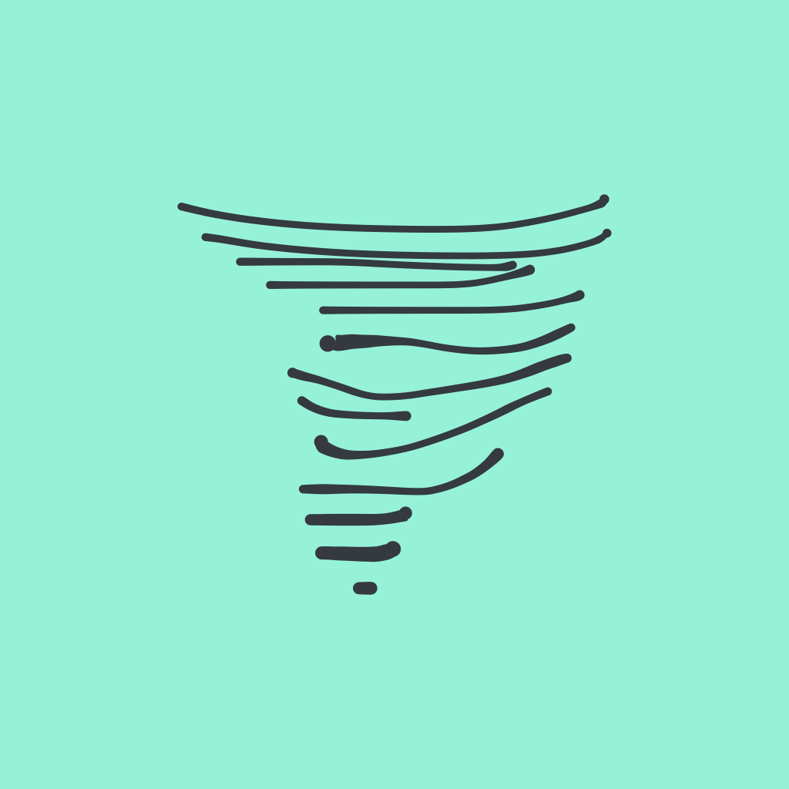

Storm · design system
Atoms, molecules, organisms
Every specimen below is drawn from the same token layer. Change a token in the panel at bottom-left and it moves everywhere at once — that is the contract.
01 · Tokens
Type scale
Display
Heading
Note body — Newsreader
label · metadata
02 · Atoms
brand mark — the ground stays #96F2D7

STORM
mark + wordmark lockup
status dot
synced · syncing · offline
tag chip
#proj/storm
#cooking
input · switch · checkbox
save states
Saved
Saving…
Queued — offline
Failed
03 · Molecules
Atoms in fixed arrangements. Each one is a row-level unit the app repeats — change the atom and every molecule follows.
property row — key chip + typed value
status
in-progress
created
2026-07-30 · read-only
note row · folder row
Sprint Retro
Projects · 2h ago
status bar · breadcrumb
v12·Saved
Vaults›Work›Projects
tag group · popover item
proj
proj/storm
proj/api
04 · Organisms
Molecules composed into the app's actual working parts.
vault card
{{ v.icon }}
{{ v.name }}
corner bubbles
A
vault · settings
rounded square
nav bubble — always expanded
formatting toolbar
H
B
i
</>
S
A
•
1.
☑
"
[[ ]]
note body — live preview
Sprint Retro
Discussed blockers from [[Sprint Planning]] and progress on #proj/storm.
npm run build
Ship small, ship often.
05 · Templates
Organisms assembled into screens, at real phone width.
dashboard
W
A
STORM
Recently opened
Sprint Retro
Work · Projects · 2h ago
Recipe: Sourdough
Personal · Recipes · 5d ago
Vaults
{{ v.icon }}
{{ v.name }}
note
W
A
‹
Projects
⚙
v12·Saved
Sprint Retro
Discussed blockers from [[Sprint Planning]] and progress on #proj/storm.
06 · Empty, loading, error
The states the brief listed as unwritten. Offline reads as a condition, never as a failure.
Nothing in this folder
New notes made here will land in Projects.
New note
Showing your cached copy. 2 edits are queued and will send when the server is reachable.
Retry now
Conflict in this note
Another device saved a different version. Both are kept in the text below — delete the lines you don't want.
<<<<<<< yours